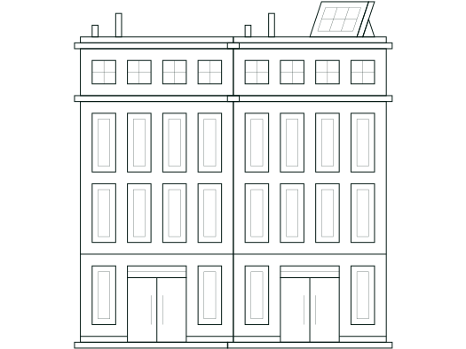

AVVR
ADVOCAATEN NOTARIAAT
Kennis van zaken, ervaring in uw sector
Onze bewuste focus maakt dat wij de branche en de markt goed kennen en altijd op de hoogte zijn van ontwikkelingen.
Snel en adequaat handelen is cruciaal, daarom schakelt u bij ons direct met één van onze specialisten.
Wij durven mee te denken buiten de juridische kaders. Wij zijn besluitvaardig en nemen verantwoordelijkheid.

We zetten onze specialismen in onroerend goed integraal in door verschillende onderdelen van een project op elkaar af te stemmen. Wij adviseren en procederen over alle fases waarin een vastgoedobject zich kan bevinden: van idee tot initiatief, ontwikkeling naar realisatie en van exploitatie naar herontwikkeling.
Maar nog belangrijker, onze advocaten hebben een sectorspecialisatie. We spreken vaktaal en weten wat er binnen een organisatie speelt. Wij kennen de ins en outs en dat geeft een voorsprong. Een kennisvoorsprong die we graag inzetten in uw belang.
23
Vooruit helpen door te luisteren, eerlijk en transparant te zijn. Dat mag u van ons verwachten. Als u bij ons de deur uit stapt, weet u hoe het zit.